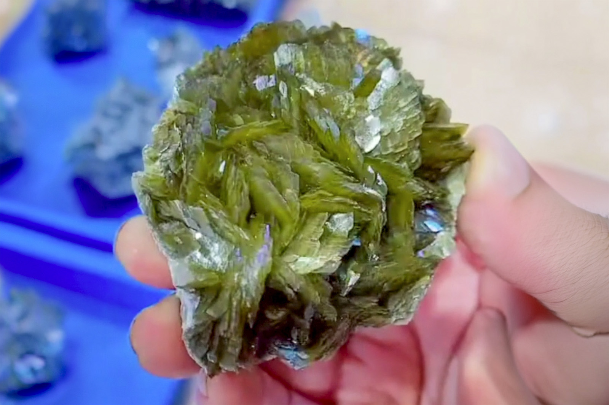

Siderite with Minor Calcite
"Gem Siderite Blades"
V-09220
Hezhang County, Bijie, Guizhou, China
Purchased 1/20/2026 from 7 Minerals Mine for $20.00
Core Collection • In Collection
Details
Storage Type: Flat
Storage Location: 000 Unassigned
Size class: Small Cabinet (0)
Dimensions: 7.4 × 5.4 × 2.7 cm
Mass: 195 g
Luster: Above Average, Vitreous